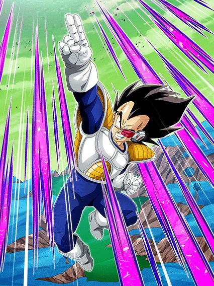

Vegeta Namek AGL

Bro é um nuker/orb changer/stacker.
Ele ganha 50% de ATK e DEF por orb pega, muda orbs pra rainbow sempre e stacka 50% de ATK e 20% de DEF no Super Attack
Se ele pegar 1 orb AGL e estiver com mais de 50% de HP, ele ganha 48% de redução de dano e 48% de chance de desvio
E caso ele esteja abaixo de 50% de HP, ele ganha 50% de chance de crítico e mais DEF pro resto da partida.. pq?
Depois de dar 5 ou mais Supers, ele vai mudar TODOS os orbs pra AGL por um turno, tornando ele uma parede e uma bomba nuclear temporariamente
Dando 4 Supers você pode usar a Active Skill dele que aumenta o dano pro resto da partida, o que deixa a nuke mais forte ainda
Bom personagem, mas meio desnecessário considerando todo o dano q já existe em outros times.
Kiwi INT

Quantos personagens desvia-ou-morre vamos ter ainda esse ano?
Esse cara tem 50% de chance de desvio que aumenta pra 70% quando ele ataca, e se no meio do turno você cair abaixo de 50% de HP, a chance aumenta pra 90%
Se você começar o turno já com menos de 50% de HP, ele vai desviar garantido nesse turno apenas
Ele tem Scouter se tiver um aliado Planet Namek Saga no turno com ele.. e é isso
O dano dele é ruim, a defesa dele é ruim.. é só o desvio mesmo pra salvar esse cara da morte certa